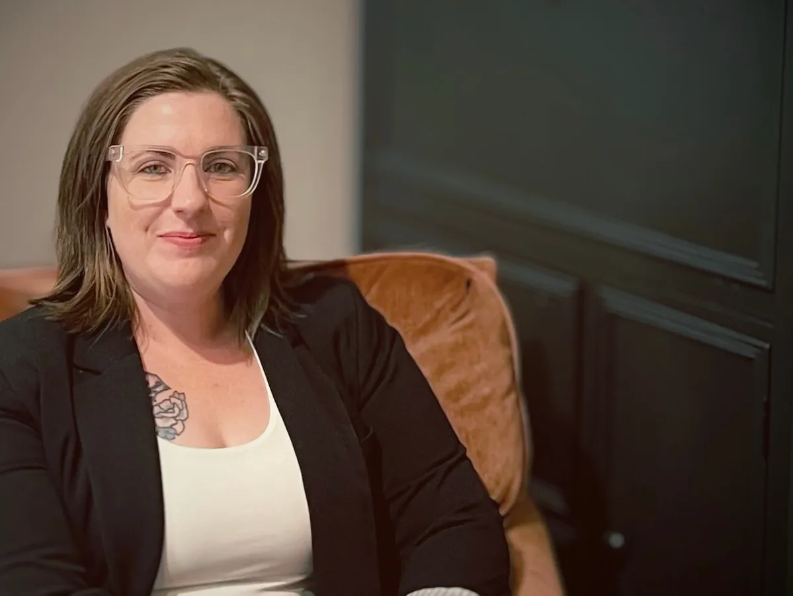

Practical nutrition counseling for real life.
Nourished Bayou Nutrition offers one-on-one virtual counseling designed to help adults build sustainable habits, feel more confident around food, and create a way of eating that actually fits everyday life. In-home kitchen workshops are also available for select group experiences.
One-on-one support
Personalized counseling built around your routine and real-life needs.
Discovery call
A simple first step to decide which service fits your goals.
Louisiana-rooted
Virtual counseling with select in-home workshops in South Louisiana.

Registered Dietitian Nutritionist
Virtual dietitian counseling with a practical, personal approach.
- Virtual one-on-one sessions with a Registered Dietitian
- Individualized guidance rooted in realistic food choices
- Optional in-home workshops for small groups in South Louisiana
Hi, I'm Amanda Gibson.
I'm a Registered Dietitian Nutritionist based in South Louisiana and the founder of Nourished Bayou Nutrition. My work focuses on helping adults build a realistic, sustainable relationship with food through practical nutrition guidance that fits everyday life.
Virtual counseling lead service · Certain insurance plans acceptedAbout Amanda
Through virtual one-on-one counseling, I support adults who want practical nutrition guidance that feels realistic, sustainable, and personal. My approach is calm, individualized, and built around real life rather than perfection.
Nourished Bayou Kitchen workshops are a separate in-home service for small groups and are not included with counseling.
- Amanda Gibson, RDN, LDN
- Registered Dietitian Nutritionist
- Virtual counseling for adults
Two separate ways to work together.
Virtual nutrition counseling and Nourished Bayou Kitchen workshops are two different services. Counseling is individualized virtual care, while kitchen workshops are small-group in-home experiences.
Virtual One-on-One Nutrition Counseling
Personalized support for adults who want practical nutrition guidance without rigid food rules. Sessions are designed to meet you where you are and help you move forward with a realistic plan. Certain insurance plans are accepted for one-on-one nutrition counseling.
Format: Virtual only
In-Home Kitchen Workshops
Small-group cooking experiences led in person for hosts who want a memorable, food-forward workshop in their own kitchen. Great for friends, wellness gatherings, and special events.
Format: In-person only
One-on-one nutrition counseling that fits everyday life.
This is a supportive, individualized process focused on helping you create changes that feel sustainable. Whether you want more structure, better consistency, more confidence in your meals, or less overwhelm around food, counseling is tailored to your real life.
Start with your full picture
We look at your routine, eating patterns, barriers, preferences, and goals so your care plan is actually relevant to your life.
Build a realistic plan
Together we create practical strategies around meals, snacks, grocery habits, and daily rhythm without all-or-nothing pressure.
Adjust as life changes
Follow-up sessions help you troubleshoot, build consistency, and keep moving in a direction that feels sustainable over time.
Support for adults who want nutrition to feel more doable.
You want structure without extremes
Get guidance that feels balanced, flexible, and supportive instead of rigid or overwhelming.
You feel stuck in inconsistency
Work on meal rhythm, planning, and everyday habits that help you follow through more often.
You want practical help, not perfection
Focus on realistic next steps, not unrealistic standards that fall apart as soon as life gets busy.
A simple first step for both services.
The discovery call helps you decide whether virtual counseling or a kitchen workshop is the right fit, while giving you a chance to ask questions before moving forward.
Book a Discovery Call
Start with a brief conversation through SimplePractice to share what you're looking for and learn how the process works.
Move Into Virtual Care
If one-on-one nutrition support is the best fit, you'll move forward with virtual counseling and a plan tailored to your needs.
In-home kitchen workshops for small groups.
Workshops are the in-person branch of the brand. They are ideal for people who want a hands-on, welcoming experience built around food, conversation, and practical nutrition learning.
Host a hands-on cooking experience with a Registered Dietitian
Invite your group, choose a theme, and enjoy a relaxed hands-on cooking experience guided by a Registered Dietitian.
Perfect for girls’ nights, small gatherings, and wellness-focused events.
- 90-minute workshop
- 2–3 recipes prepared together
- Up to 8 participants included
- Printed recipe packet for each guest
Private In-Home Workshop
Up to 8 guests included
When split between guests, most workshops come out to about $50–67 per person. Additional guests can be added for an extra fee.
Final workshop details, including menu selection and travel considerations, are discussed during the discovery call so the experience can be tailored to your group.
Weeknight Easy Meals
Beginner-friendly recipes that make dinner feel simpler and more manageable.
Meal Prep Made Easy
Flexible prep strategies that help people eat well without getting bored or overwhelmed.
Balanced Meals Made Simple
Hands-on learning around satisfying meals, balanced plates, and everyday nourishment.
Clear, grounded, and designed for real life.
Whether you choose virtual counseling or an in-home kitchen workshop, the goal is the same: practical support that feels warm, realistic, and genuinely useful.
Support without pressure
You don't need to be perfect to begin. The focus is on practical progress and realistic next steps.
Food that fits your life
Recommendations are built around your preferences, schedule, capacity, and everyday routine.
A calm, professional process
You'll know what the next step is, what each service includes, and how to move forward with confidence.
Louisiana-rooted support with virtual counseling and select in-home workshops.
Virtual counseling across Louisiana
Nourished Bayou Nutrition offers virtual counseling for adults across Louisiana, making it easier to access one-on-one nutrition support from home.
Houma and Thibodaux roots
Based in South Louisiana, the practice reflects the food culture, rhythms, and real-life needs of people in Houma, Thibodaux, and surrounding Bayou communities.
Separate in-home workshops
Nourished Bayou Kitchen workshops are a distinct in-person service for small groups and are scheduled separately from virtual counseling.
Personalized nutrition support for adults.
Nourished Bayou Nutrition provides virtual nutrition counseling for adults looking for realistic, professional support from a Registered Dietitian Nutritionist. If you're searching for a virtual dietitian in Louisiana, online nutrition counseling, or one-on-one nutrition support that feels practical and personal, this practice is designed to meet you where you are.
Based in South Louisiana, Amanda Gibson, RDN, LDN provides individualized virtual counseling focused on sustainable habits and practical nutrition guidance. Nourished Bayou Kitchen workshops are a separate in-home service for small groups who want a hands-on food experience.
Common questions.
Start with a discovery call.
Whether you're interested in virtual one-on-one nutrition counseling or an in-home Nourished Bayou Kitchen workshop, a discovery call is the best first step. We'll talk through your goals, answer questions, and determine the best fit for your needs.
Discovery calls are brief, pressure-free conversations to help determine the best next step. Prefer to send a message first? Use the contact form.